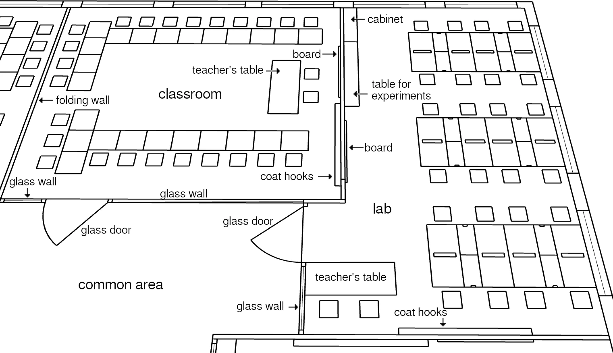

7. Education System
7.5 Level 3: Competency Versions
From Level 3 onward, all modules have prerequisites (in the form of other modules whose comprehension test has been passed). Only once these are met are students allowed to attend the introduction of the module, after which they can participate in the module.
prerequisite modules ⇒ introduction ⇒ module participation
Just like the modules of Level 2, modules of Level 3 will sooner or later be attended and completed by every student. But when and in what order can be chosen by the student.
These levels do not take place one after the other! It will be completely normal to attend modules of Level 3 before all modules of Level 2 are completed, to attend modules of Level 4 before all modules of Level 3 are done, and so on.
The school’s learning material is roughly divided into three categories:
1.) System understanding: fundamentals to understand more complex explanations, to know how the world works and how the present came about (e.g. mathematics, history, physics).
2.) Everyday knowledge: concrete skills that a person needs to cope in everyday life and work or to deal with emergencies (e.g. household crafts, writing factual texts, survival, cooking).
3.) Self-development: knowledge useful to lead a fulfilled life (e.g. empathy, news, human relationships, network thinking).
The modules of Level 3 are the answer to the following question: What knowledge does society demand that every student learn? What knowledge is definitely necessary for society and the learner’s later daily life?
Scope of Levels 1–3 (in my curriculum draft): Level 3 comprises 44 segment weeks of learning material, which corresponds to roughly three and a half school years.
Levels 1–3 together comprise about six years worth of learning material, 60% of the total time that children are in school (ten years). This proportion will be smaller or larger than 60% if a student on average needs fewer or more than three segments to complete a module.
Levels 1 to 3 encompass the knowledge for which children can choose the time and order, but not whether they learn it or not. For the remaining school time, students can then genuinely decide for themselves what else they would like to learn beyond that.
A few words about the fixtures of the rooms:
Boards: They are available in every classroom. Whether it is a normal classroom, a mat room, a lab, or a special room such as a teaching kitchen. These are not slate boards written on with chalk, but large screens on which teachers and students can write digitally with special pens. Above all, however, the teacher can control what is displayed on them, allowing for the viewing of images and videos (with sound).
Even though they are large and bulky, these devices are designed for easy replacement, and the school has spares in stock. No room should become unusable because its digital board does not work.

Labs: They contain permanently installed four-person tables. These tables are equipped with power, gas, and water connections.
In the middle of the tables are deep drawers that contain experimental materials: microscopes, Bunsen burners, heating plates, test tubes and other vessels, measuring devices, ...
The teacher has an app with which they can unlock a specific drawer for each four-person table in this room. When locking them again, the app shows whether all drawers were closed and could be locked.
Normal classrooms: Here the tables can be arranged as desired, so the picture only shows an example.
Since Level 2, understanding assessments have been required to complete modules. They are still not graded. Starting at Level 3, students receive a metal pin engraved with the module name and the student’s name as a reward for completing a module. And from this level onward, students can also pass understanding assessments “with distinction”. Initially, this distinction does not change anything: its recipients receive the same pin and have met the requirements for the same new modules.
However, it opens up a new opportunity: anyone who has completed an assessment with distinction may deepen this module if they wish.53
Every 1–3 years, teachers offer the Competency Version of their module instead of teaching the Foundation Version. The Competency Version is open only to students who have completed the understanding assessment of the Foundation Version “with distinction”,54 and it runs over a period three times as long. If the Foundation Version of the module has a segment length of two weeks, then the Competency Version has a segment length of six weeks. Just like for the Foundation Version, there will also be a one- or two-week introduction in the corresponding time slot that must be attended first. This is essentially about clarifying expectations: if students invest so much time in this subject matter, what can they expect to learn from it? How will they learn it? And what will this knowledge enable them to do? This introduction takes place regularly and initially serves only to provide information so that students can make good decisions.
As an additional prerequisite for attending the Competency Version of a module, students must have already completed an appropriate number of regular modules from Levels 2 and 3. The required number of modules will be higher the more time students have already spent attending Competency Versions.
The Competency Version runs over exactly three segments, so there is no repetition of the same perspective. The Competency Version of a module runs one hour longer per school day, until 16:00 instead of until 15:00 (thus just under five instead of just under four hours per school day; the introduction is omitted). This provides even more learning time for the module, and lets students and teachers concentrate fully on its subject matter with fewer distractions.
The Competency Version can only be attended from the very beginning; later entry is not possible. If all three segments are attended, which is the expectation, then a student attends the Competency Version of a major module for 18 weeks—almost half a school year!55
“Oh no, almost half a school year! That’s far too big an investment; other learning material will be left behind!”
That only looks at the (time) costs. Let’s take a look at what this time investment gets the student: if a student, for example, is passionately fond of cooking, then through the Competency Version of the module “Cooking” they get the opportunity either to become a really good hobby cook among their family and friends, or to lay the foundation for a later career choice as a cook.
If someone is enthusiastic about animals and therefore takes the Competency Version of the module “Animal and Plant Life”, then they will thereby gain a profound understanding of the Earth’s ecosystem. This can end for the student as a lifelong hobby, spending a lot of time in nature and observing it. It can begin the path towards a later research career in the field of ecology. Or perhaps it will end up as very useful additional knowledge in a practical profession such as veterinarian or gardener.
In any case, the student will contribute to more environmentally friendly behavior within their family and circle of friends, since they now understand many of the underlying connections.
It is really important to keep in mind here that this is not teaching material that is forcibly taught to all students. Instead, it is learned by students who have understood the basic material of this learning area very well (passed the assessment of the Foundation Version “with distinction”). Who then attended an introduction to find out what they will learn in the Competency Version of the module and what it can be good for. And who then, on the basis of this prior knowledge, themselves decided to invest a great deal of time in this area because they want to learn more about it.
This means not only that the respective student is interested in the subject matter and has talent for it. It also means that this applies to all their classmates and thus every student has an outstanding learning environment here. As a result, the module should also be taught by particularly motivated teachers: not only do they have talented students sitting in front of them who are truly interested in this module. The teachers also have the chance to go far more in depth with the material they repeatedly teach in the Foundation Version. To be challenged more by their students and to test and improve their own understanding of the material. So that in the end, not only the students leave the module with a great deal of new knowledge, but the teachers have also learned more themselves and come to understand the material even better. Which in turn will further improve the quality of their regular teaching (the Foundation Version of this module).
Just as there is a pin from the school for passing each understanding assessment, there is one made from a different metal (⇒ in a different color) for passing a competency assessment. Since a far higher effort is involved here and it is therefore something special (for each module only a small portion of students will attend the Competency Version), the pin here has a much higher social value.
I assume—and society will encourage this—that every student will wear one or several of the pins they are most proud of on their clothing.56 This increases students’ sense of satisfaction, because they receive positive feedback for having accomplished something academically. It is also a great conversation starter, since these pins give you an idea of what the other person is interested in and what they know a lot about. Finally, there will definitely be situations where the pins alone make it clear who is most likely to know what to do in a given situation (in our examples above: when cooking or when observing animals).
Starting in the third school year, the class goes outside once a week during the foreign-language lesson (on one of the days when they do not have their fitness lesson outdoors).
This initially serves as an opportunity to learn many new vocabulary words outdoors through demonstration. Later on, gardening will take place during this time as well (always in the foreign language!). The gardening (but not the going outside) ends after the eighth school year. The school grounds therefore need to provide enough garden beds for three classes of students to be gardening at the same time.
One of the goals here is that each student is responsible for a few plants that they take care of from sowing to harvest (the gardens are under camera surveillance…).
The aim is to teach what one needs to know in order to successfully grow, harvest, and process crops—and to put that into practice as well. Students can learn here about soil, fertilizers, plant requirements, sowing and harvest times, further processing, and preservation.
I have also included an optional module in the curriculum to learn this knowledge in a bundled form. There are two reasons for placing it within foreign-language instruction. First, foreign-language teaching is meant to evolve over the years from playful language learning to using the language as a medium for conveying knowledge—alongside the social aspect of conversation within the class, which is never meant to be lost. Something like gardening, where you can talk comfortably while working, lends itself well to this combination.
Second, only this form of knowledge transfer, spread out over a long period of time, makes it possible to teach gardening in a practical manner. If students were to learn this material in a concentrated form over a few weeks in a module, it could largely only be taught theoretically. In this way, by contrast, everything—from sowing and care to harvest and processing—can be taught and learned in practice.